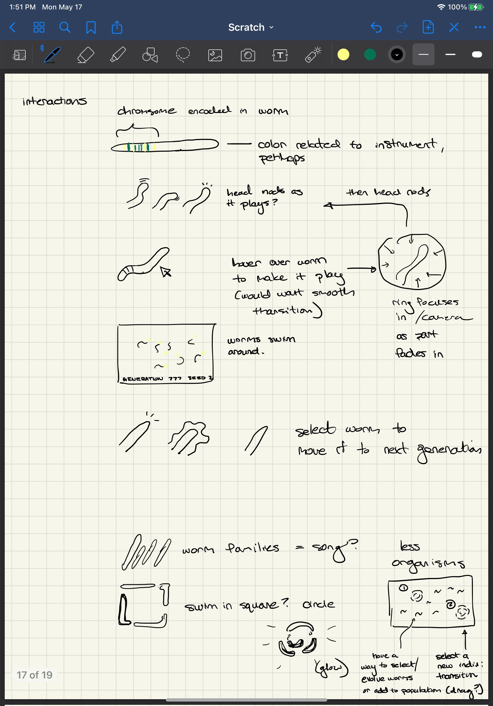

Music 220a Final, Spring 2021
???
Garrick Fernandez
Milestone (Monday, 5/17)
Ideas
How to: FM Synthesis
Some sort of interactive arp/sequencer?
Genetic Algorithms, Audiovisual Extension…
- Genetic algorithms produce melodies which can be sounded
- Genetic algorithms generate the next pattern
- Buttons to select instruments/threads/ideas
- User input guides selection of fitter individuals
-
Can we interpolate a fitness function using not that many human
evaluations? How do we balance diversity in the samples with tonality
(sounding well). Are there constraints we can place on the problem?
Resources
Music coding
Live coding
Code is the medium between people and the music
Literature
Background
-
Demoscene (Wikipedia)
-
Computer music (Wikipedia)
-
Much of the work on computer music has drawn on the relationship
between music and mathematics
Genetic algorithms in music
Music inspiration
-
Baiyon (Youtube)
- Pocket Operator synths
Ideation
What could an audiovisual experience look like? Rey gave the idea of worms
when I was talking about genetic algorithms…

Milestone 2 (Monday, 5/24)
Front end
I learned some p5.js, made a chunk of the worms sketch, added stub event
listeners and handlers, and moved the sketch into React with the goal of
moving towards a more fully-fledged application. This will communicate
with/control my back end.
Back end
I’ve been figuring out OSC and Supercollider for my AA222 project. I
haven’t done the equivalent work for ChucK in MUSIC, but I’m hoping to
carry the lessons over. Here’s what I want to communicate using OSC:
- Set the parameters of UGens, envelopes, filters, etc.
-
Set the timing information of an instrument (probably using an array)
and whether it’s playing or not
Going to try and get more done to show in class today. Will also post pics
and clean up the documentation when I get the chance.